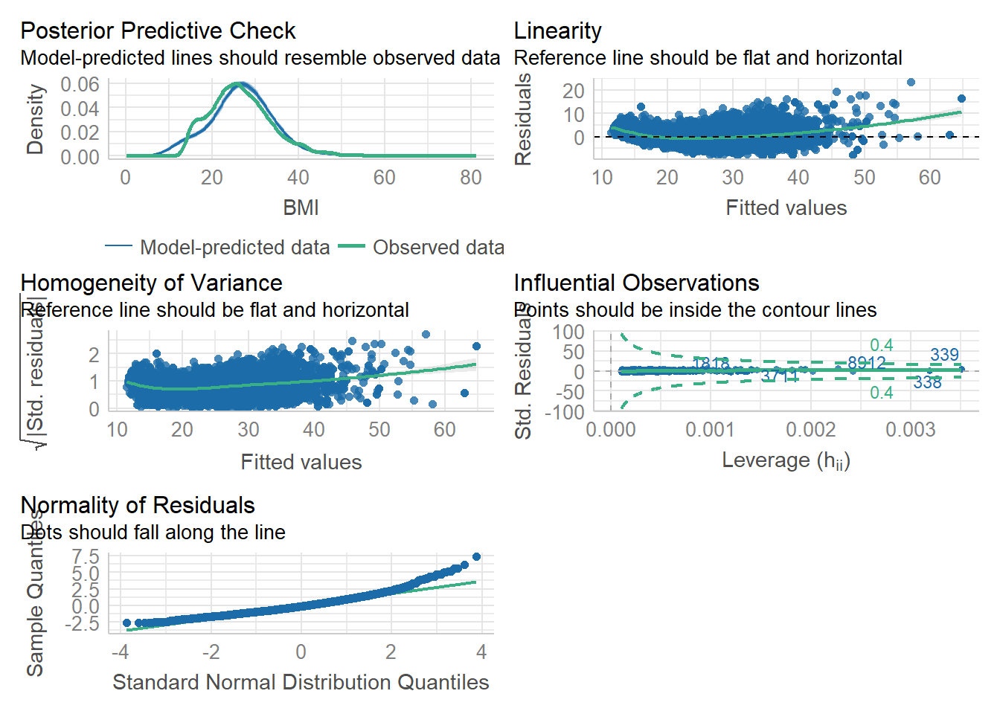

Chapter 5 Linear regression
5.1 Mathematical understanding of simple linear regression
5.1.1 brief introduction
Simple linear regression, or linear regression, is a statistical method that can examine the influence of one independent variable on one dependent variable. The formula for linear regression is as follows:
\(Y = b_{0} + b_{1}X + error\)
While this can look confusing, each component of this equation can be reduced to a simpler explanation.
- \(Y\) = dependent variable (also known as the outcome variable)
- \(X\) = independent variable (also known as the predictor variable)
- \(b_{0}\) = regression constant (also known as the slope)
- \(b_{1}\) = regression coefficient (also known as the intercept)
- \(error\) = measure of residuals which is the difference between the predicted and actual values.
Some of these variables are familiar, e.g., a dependent variable. However, you may wonder what a slope and intercept are.
5.1.1.0.1 slope
\(b_{1} = \frac{cov_{(x, y)}}{s^2_{x}}\)
Now, let us remember how to calculate covariance
\(cov(x,y) = \frac{\sum_i^n(x_i - \overline{x})(y_i - \overline{y})}{n-1}\)
here, each participant calculation is added together and divided by the number of participants minus one.
In addition, \(s^2\) refers to the variance of the independent variable. And here is the formula
\(s^2 = \frac{\sum_i^n(x_{i} - \overline{x})^2}{n-1}\)
here, the sum of each participants x variable values (score minus the mean) is summed and divided by the number of participants minus one.
5.2 In R
While the theoretical understanding of the simple linear regression is important, it is also advantageous to know how to conduct this in R.
first, we need to import our libraries needed for this analysis.
library(tidyverse) # main collection of tidy packages including modelr
library(performance) # to test model assumptions
library(NHANES) # dataset
library(Hmisc) # correlation packageshead(NHANES) # examining the NHANES dataset## # A tibble: 6 x 76
## ID SurveyYr Gender Age AgeDe~1 AgeMo~2 Race1 Race3 Educa~3
## <int> <fct> <fct> <int> <fct> <int> <fct> <fct> <fct>
## 1 51624 2009_10 male 34 " 30-3~ 409 White <NA> High S~
## 2 51624 2009_10 male 34 " 30-3~ 409 White <NA> High S~
## 3 51624 2009_10 male 34 " 30-3~ 409 White <NA> High S~
## 4 51625 2009_10 male 4 " 0-9" 49 Other <NA> <NA>
## 5 51630 2009_10 female 49 " 40-4~ 596 White <NA> Some C~
## 6 51638 2009_10 male 9 " 0-9" 115 White <NA> <NA>
## # ... with 67 more variables: MaritalStatus <fct>,
## # HHIncome <fct>, HHIncomeMid <int>, Poverty <dbl>,
## # HomeRooms <int>, HomeOwn <fct>, Work <fct>, Weight <dbl>,
## # Length <dbl>, HeadCirc <dbl>, Height <dbl>, BMI <dbl>,
## # BMICatUnder20yrs <fct>, BMI_WHO <fct>, Pulse <int>,
## # BPSysAve <int>, BPDiaAve <int>, BPSys1 <int>, BPDia1 <int>,
## # BPSys2 <int>, BPDia2 <int>, BPSys3 <int>, BPDia3 <int>, ...here, we have a lot of continous/integer data; and, we can therefore implement SLR.
Now, let us see if a regression analysis is worthwhile, one way to do so would be to examine the correlation between variables. Specifically, if a variable is correlated to another variable, we could then predict the value of a variable based on another.
Here we will do a simple BMI vs weight.
rcorr(NHANES$BMI, NHANES$Weight)## x y
## x 1.0 0.9
## y 0.9 1.0
##
## n
## x y
## x 9634 9634
## y 9634 9922
##
## P
## x y
## x 0
## y 0We can see that BMI and weight are highly correlated, r = .09. We want to see if weight can predict BMI. So lets build some models! Typically it is common to build a first model that simply uses the mean of the outcome variable as the predictor and a second model testing our predictor. We can then compare these models and examine whether our predictor model is significantly better than prediction based on mean.
model1 <- lm(BMI ~ 1, data = NHANES)
model2 <- lm(BMI ~ Weight, data = NHANES)lets test our model assumptions.
check_model(model2)
While not perfect, the assumptions approximately hold up.
Now, let us see if our model2 is better than our model1
anova(model1, model2)## Analysis of Variance Table
##
## Model 1: BMI ~ 1
## Model 2: BMI ~ Weight
## Res.Df RSS Df Sum of Sq F Pr(>F)
## 1 9633 524169
## 2 9632 97528 1 426641 42136 < 2.2e-16 ***
## ---
## Signif. codes: 0 '***' 0.001 '**' 0.01 '*' 0.05 '.' 0.1 ' ' 1Here, we can see that our model2 is significantly better p < .001
now let us summarise our model
summary(model2)##
## Call:
## lm(formula = BMI ~ Weight, data = NHANES)
##
## Residuals:
## Min 1Q Median 3Q Max
## -8.1964 -2.2379 -0.3448 1.8328 23.5453
##
## Coefficients:
## Estimate Std. Error t value Pr(>|t|)
## (Intercept) 9.093256 0.091514 99.36 <2e-16 ***
## Weight 0.241376 0.001176 205.27 <2e-16 ***
## ---
## Signif. codes: 0 '***' 0.001 '**' 0.01 '*' 0.05 '.' 0.1 ' ' 1
##
## Residual standard error: 3.182 on 9632 degrees of freedom
## (366 observations deleted due to missingness)
## Multiple R-squared: 0.8139, Adjusted R-squared: 0.8139
## F-statistic: 4.214e+04 on 1 and 9632 DF, p-value: < 2.2e-16